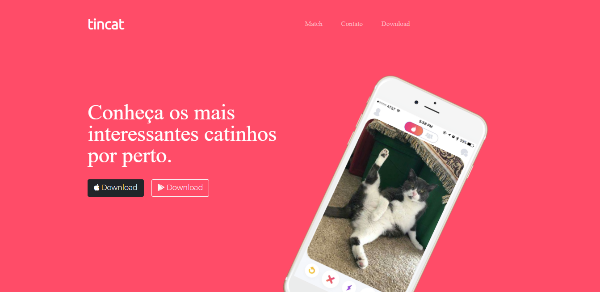

TinCat

O TinCat é uma ideia de conectar pais de gatinhos para encontrar pares para seus filhos. Tem toda uma idéia para conversar com o gato e deixa bem claro seu propósito.
Esse é o meu maior orgulho até agora. Foi feito como atividade de um dos cursos que fiz, me dediquei bastante para fazê-lo e saiu bem legal.
As tecnologias usadas foram
- HTML
- CSS
- Bootstrap
Você pode acessá-lo clicando aqui.